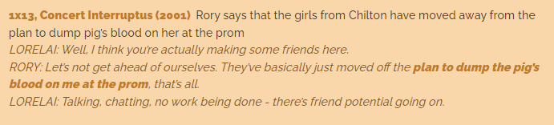

Gaat over meisje Carrie die extreem religieus wordt opgevoed door haar alleenstaande moeder en ze ontdekt dat ze telekinetische krachten heeft (dochter van satan) en moet in een kot zitten van haar moeder als straf en bidden. Ze kreeg haar regels op school en werd uitgelachen door haar peers. Sue voelde haar schuldig en liet haar popu bf Carrie naar prom vragen. Ze werden promqueen en promking opgezet door de beste vriendin van Sue die echt een pestkop is en niet meer naar prom mocht. Op het moment dat ze vanvoor stond, werd er een emmer vol varkensbloed op haar hoofd gekapt. Met haar telekinetische krachten sluit ze alle deuren neemt ze wraak op iedereen steekt de school in brand. Sue haar beste vriendin en haar bf waren al weg, maar die vermoord ze ook in hun auto, haar moeder vermoord ze met 10 000 messen uit de keuken in haar nadat zij haar eerst wou vermoorden. Daarna verdwijnt ze in de grond met haar huis enal. Wnr Sue haar graf komt bezoeken, sleurt ze Sue ook mee? Enkel in originele film denkk
